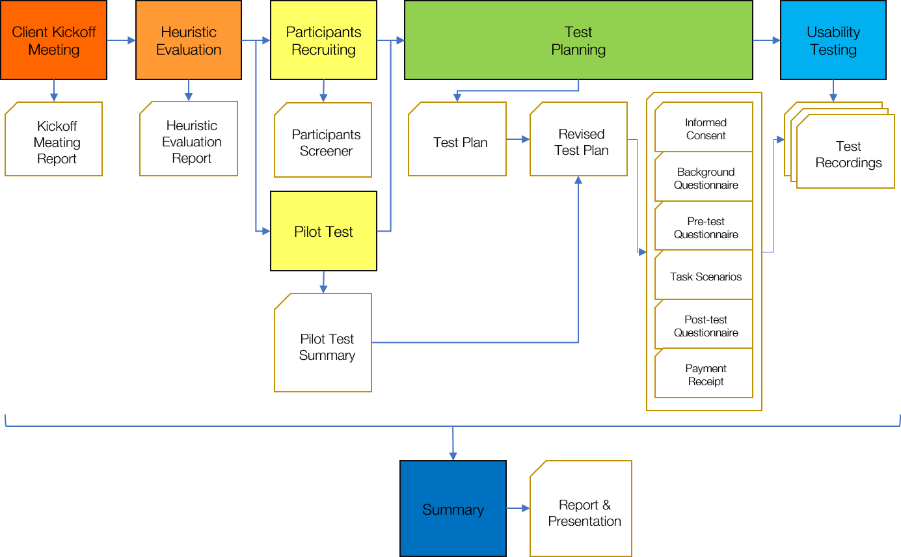

Calendar App UI/UX Design


Visual Guidance in VR: UI Design, Testing and User Study
New Horizon
Virtual Reality is currently one of the hottest topic in Human Computer Interaction, because new generation VR systems such as Oculus Rift and HTC VIVE finally could bring lifelike VR experience to everyone’s house. But bring people to a new location in virtual space can often make them disorientated, not knowing where they should look at, especially in action VR games and VR movies.
I noticed this problem last year, and initiated a series of design, field study and research after. Currently, my study is forcing on guiding people’s vision beyond their field of view inside a controlled environment. A series of user studies are scheduled to gather raw data from participants. Hopefully reveal the pros and cons of several guiding solution.
Solution
One of my proposed solution I particularly like is Flashing. It uses human’s instinct of searching for flashing light source. Whenever a new point of interest is needing user attention, an instant light source will appear at the target location for short period. Like the GIF below showing that a red flash is created just outside the bottom right corner.
Grabbable Interface
Another new UI design concept I propose is called Grabbable Interface. We all know that current VR goggles have limited field of view, so putting old HUD style interface is unfavorable and undependable for VR. As the HUD display taking already limited space of the VR screen. It’s better to put vital information, menu and tools on those virtual hands, so people can concentrate on what they supposed to look. It can be even better if sets of common functions can be attached to the body, or a waist belt. I’d love to see commands and windows of my computer screen becoming tangible tools and cards in the VR world.
AirBeats
Wearable + Music
This project came from our HCI with Mobile Devices course. In this secession, we discuss possibilities of how mobile computing can enhance everyday life, not only smartphones, but also wearables and ambient systems. As a practice, the AirBeats is to build a prototype for eyes-free music composition. It involves placement of various sensors on the body and generating music by sensing the interactions. During this project, our team exercised the design sequence of concept, blue map, implication and user study.
Concept
We were interested in the idea of wearable music instrument at the beginning. After we studied some related projects such as BeatJazz and DrumPants, we imagine our project as a system helping a person recreating Beatboxing sound. But after several rounds of iteration, we found that using MIDI protocol is much more viable than other solutions. The goal changed to create a wearable system which a person can create and enjoy music on-the-go. We carefully considered how this person can keep making music creations without being interrupted in many scenarios, based on a persona of college students.
Blue Map
We chose Arduino Uno as the brain of our system, since we only need to transfer data locally. The Arduino provides great expansibility among all microcontrollers, and its community support is extremely strong. Then, we found the perfect Arduino for our project. The VS1053 encoding/decoding processor gives the Arduino full capability for MINI decoding and playback. A battery shield was also stacked to provide a mobile power source. At last, we selected the input sensor that is affordable, reliable and easy to control. Force-sensitive resistor was eventually selected to fulfill this task.
Software
Essentially what we were trying to build is a MIDI controller and a MIDI synthesizer. With the VS1053 shield and the Uno, making a synthesizer was not a hard task. But the Arduino processor has very limited RAM and slow clock speed. We tried to add a recording capability by writing the received data to a MicroSD card, but the sample rate could hardly reach 50Hz. Meanwhile, we processed with an alternative solution of interpreting the control signal on a laptop using Fruity loop which enable much more awesome functions. The Arduino can transmit serial data through a USB to a laptop in real time. With several mouse clicks, DJ-style music is right in the corner. The only problem is that normally people don't walk with a running MacBook. In the end, we approached the design goals with both solution simultaneously.
Hardware
Hands are the best partner to most music instruments. We believed that they are also optimal for making music on-the-go. We sewed four force resistors into a glove. By pinching four fingers against thumb or press them against thigh, clear analog signals can be sent to the A/D circuit. For the other arm, we prepared seven capacitive touch sensor pads on a textured fabric base. When each copper touching area was activated, a special function such as Mute, Vol Up, Switch Instrument can be triggered. To make wires more durable, we braided much of them together so they won’t become entangled around wearer’s arm.
Field test
The best way to test our project was to make a user study. From design to construct, from software to hardware, we had a chance to get feedback directly from students of RIT. Our system was evaluated as simple and intuitive to use. The glove design enable everyone to enjoy the sound and rhythm from the first minute. However, lacking a screen and instability of pressure sensors sometimes put people unaware of the current system status. Our AirBeats had relatively positive review from test users. We also made a short video demonstrating the final achievement of our work.
Usability Testing

Usability testing is one of the core skill of a HCI researcher. It’s a comprehensive evaluation of a product in the design cycle. In this case, our client appointed us to evaluate the Kodak Moments mobile application by both heuristic guidelines and through controlled user studies. After sever phase of the study by the plan, we submitted the usability testing report in high quality.
Heuristic Evaluation
A photo editing, printing and sharing app such as the Kodak Moments contains so many features that might feel incoherent or obscure to users. Our team carefully examined the application with classic design principles such as consistency, discoverability, feedback and error prevention. A fifteen-page report with heuristic violations and their severity was submitted to our client.
Participants
Asking your friends to try it out is easy, inviting random people to a specific testing room is much harder. While our team made a pilot test to rehearse the test procedure, we also posted out the recruitment flyer. In the flowing weeks, we commutated with everyone interested for screening and time scheduling through emails. We promised gift cards as compensation of their time and effort for this study.
Testing
Ten participants were invited to conduct the study in our controlled testing lab. The lab was separated into two room by a one-way mirror. Through the mirror and video recording equipment, we can observe the participant with minimum disturbance. Guided by our team member and usability testing instruments, they experienced the application, performed tasks in different scenarios, and conducted a short survey. Each session was monitored and video recorded under the consent of participant. During the session, we took notes and add highlights to the video footage was for further study.
Report
A 28-page report was written as the overall evaluation to the product. From the direct observation and over six hours of video recording, we proposed tens of recommendations in three categories. Preference data related to different functions and designed features were evaluated and visualized. Qualitative feedbacks and comparison with similar apps were included as well. Moreover, we made an hour-long presentation to our client, the Kodak Alaris product management team. The final evaluation was as complicated as any other real-world issues: users like the flat design, but puzzled by some over abstractions, they love some of the features while reject some other concepts. However, our client was very satisfied by the work we presented, as it clearly helped engineers to fix major usability issues of the application, and provided vital information for setting the direction of its future development.
Project Clock 240
What will be a clock like in a smart home? Clock240 is a working prototype born from one of our visions. Laptop, tablet, smartphone and smartTV, almost every screen in the house shows the time now. It makes the importance of a wall clock is slowly fading out. To revalue this old friend, our Clock240 smart clock design makes the clock a central display for the family to read different types of information related to the house on a timely manner.
A microcontroller enables the Clock240 to communicate with other sensors in the house through WiFi. Other sensor modules driven by the same framework can be easily placed in the house with outstanding extensibility. Two hundred and forty blocks moved by micro servo can visualize four types of data in each twelve minutes in the past twelve hours.
Beautiful and Smart
The Clock240 prototype is made of over 350 components. Acrylic panels and color blocks, wooden casing, motors, servos, screws, nuts, 3D printing components, wires, switches, connectors and microcontroller, working in a harmony, covered by a simplicity design.
Red, Yellow, Green and Blue
Four rings of colored acrylic blocks give users a tangible visualization of four types of data possibly selected from room temperature, light condition, humidity, door opening, power consumption or weather forecast. Each block can be pushed out from 1% to 100% by a servo. A special type of grease holds the blocks while the clock rotates until they are repositioned by slopes after a circle of twelve hours.
The Concept
After the liquid display project, we have been excited about the idea of using Particle Photon WiFi development board to make a more complicated project with multiple IoT devices fit for future home. We found the wall clock hasn’t been changed for decades by the information revolution. Meanwhile, there is not yet a center place for home members to review what had happened after they return from school, work or other trips. As a cat owner, I am curious about when my cats are more active. When they are alone? In the midnight? In front of me? I believe this creation will help to resolve these questions, as well as other people’s curiosity in their house.
Our team modified the plan several times to fit our capability and time limit. Through the discussion, we also ruled out impractical ideas, replaced them with reliable, efficient and beautiful designs. The iteration design and plan revise happened almost every day at the initial stage.
3D printing
We tried to use any premade part we have to save time and reach the goal. But some core components were designed in a unique shape. The 3D printer became the best choice to fast fabrication. Size of other components was measured for the reference and fitness. We also took the advantage of the 3D modeling application to preview, test and debug our mechanical design before the assembly.
Coding and Final Show
Month after the physical structures was finished, I put some time in rewriting the code with better readability, efficiency, reliability, and more features. Although the Particle Photon is a single threaded, it has many amazing internet functions that make it stands out from many Arduino-type systems. Applying some of these cloud computing features, I was able to build stable communications between the Clock240 and a web browser on any device. The clock can get time from the internet, receive moving instructions from a webpage, and give feedback. When we demonstrated our work in the IMAGINE RIT event, final user experience was satisfactory and complete, considering it was firstly developed as prototype.
Liquid Display
This ambient display project aims for providing people information with minimum disturbance. Like a painting on the wall, it requires no attention unless you are interested. We love the beauty of Ferrofluid and its amazing nature of reacting to magnetic field while maintaining liquid. How about use it to display the due day from google calendar?
The Box
The box is the container of all the electrics and wires. Two layers of wood board are used to make the case to sustain the structure. 3D printed parts are screwed inside the box, holding the motor, magnets, Photon and other components.
Making the container
We made the container out of Laser-cut acrylic. The container has specially designed dents to hold the Ferrofluid. Three bigger reservoirs are placed on the side, while a matrix of smaller dents take the rest of the surface. Each small hole presents one more day left before the due date. A layer of aluminum covers the acrylic base to prevent acrylic from reaction to the Isopropyl alcohol solvent.
Ferrofluid and the container
We tried many combinations to create a stable container-liquid environment which the ferrofluid stays flexible and doesn't stick to anything else. We believed polar solvent such as isopropanol can resist oil-based ferrofluid for infiltrating the acrylic. Later we found isopropanol was eating the methyl methacrylate, we add aluminum shield for protection. Different shapes of dents were experimented to channel the flow of magnetic fluid better. Although the final solution can’t maintain sustainable over a day, we have tried our best under limited time and funding.
Working Mechanism
We use a Particle Photon microcontroller as the brain of this device. Its IDE uses a special type of C++ code in cooperate with online community libraries to ensure an easier development. For the power-thirsty electromagnets, we use P-channel MOSFETs to control the current for a power adapter. This approach allows the Photon's logic level signals to drive the system possible. Then Diodes also introduced to protect the circuit from induced current.
Electromagnets array pull the Ferrofluid out from the big reservoirs to fill appropriate smaller puddles. A motor is fixed on the side of the box to move the electromagnet carriage. The carriage moves to a specific location to create a new pattern in the container when there is a new Google calendar event created.
EPICENTER
The Epicenter project is an information and interaction design practice. The core objective of our client was to build an efficient, user-friendly training website for first responders. We conducted contextual inquiries to gather detailed user scenario information of target users like fireman, emergency medical technician and ski patroller. Then, we made affinity diagram to group up viable feature points we found from the interview. Based on these design features, we created web and mobile application prototypes for demonstration.
Contextual Inquiry
The reason of performing the contextual inquiry was not only to understand our users, but also the environment they use the Epicenter. First responders may take their training during work hours, and probably interrupted by alarms, rings and other distractions. Thus, letting them being able to save and resume the training was specially considered in the design.
Affinity Diagram
Contextual inquiries gave us hundreds of comments about how first responders use technology, as well as their anticipation of a modern training website. Our team wrote those features found from the interview down to sticky notes, and carefully organized them into hierarchy.
Personas
We created seven user personas based on behavioral patterns we found. These findings also led us to define the persona’s characteristics and goals. Designated scenario stories were given to personas to better describe their personality, ability and duty.
Design
With only primitive website building skills (back then), we made a mockup website prototype on the Wix.com and an iOS application prototype on inVision.com, as the overall demonstration of our user study. In charge of the mobile app prototyping, I spent extra efforts on binding the required features and training content with the lightweight, easy-to-use mobile experience.